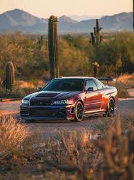

The Nissan Skyline R34 (1998–2002) is a legendary Japanese sports car, particularly the GT-R model, which featured a 2.6L RB26DETT twin-turbo inline-six engine and the ATTESA E-TS all-wheel-drive system.
Known as a 90s JDM icon with widebody styling, it is heavily used in racing and tuning, often producing over 600hp
- Engine: 2.6L RB26DETT twin-turbo inline-six
- Power: 276hp (stock), often tuned to 600hp+
- Drivetrain: ATTESA E-TS all-wheel-drive
- Production Years: 1998-2002
- Notable for: Iconic design, tunability, and racing heritage
- GT-R V-Spec
- GT-R V-Spec II
- GT-R M-Spec
- GT-R Nismo
- GT-R V-Spec
- Enhanced suspension and brakes for improved performance.
- GT-R V-Spec II
- Further suspension upgrades and weight reduction.
- GT-R M-Spec
- Luxury-focused version with premium interior features.
- GT-R Nismo
- High-performance variant with increased power and aerodynamic enhancements.